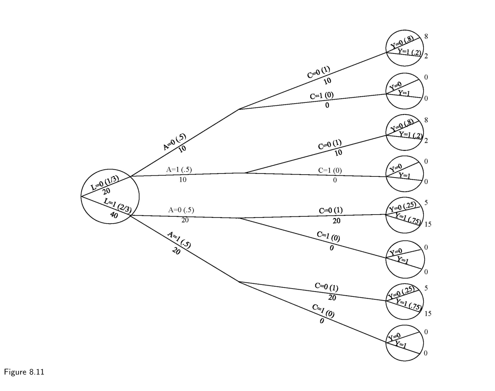
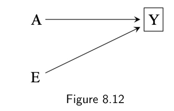
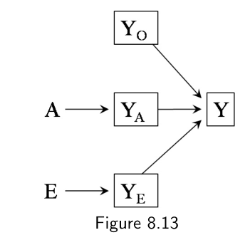
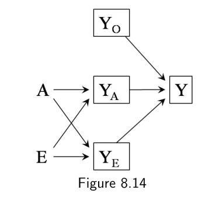
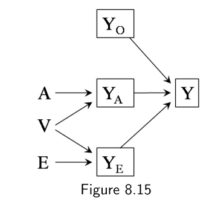
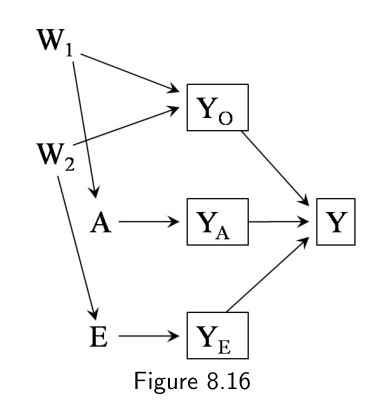

第一部分 · 无模型的因果推断 · Part I — Causal inference without models
第 8 章 · 选择偏倚
Hernán MA, Robins JM（2020）. Causal Inference: What If. Chapter 8. 本页为中文全文翻译，附译注。
设想一位研究者做了个随机化试验，想回答这样一个因果问题："我抬头望天，会不会带动其他路人也抬头？"她发现，自己抬头和其他行人抬头之间存在很强的关联。这个关联反映的是因果效应吗？按随机化试验的定义，这项研究里本不该有混杂偏倚。但还有另一个潜在的麻烦：分析只纳入了那些在成为试验对象之后、同意使用自己数据的行人。腼腆的行人（本来就不太会抬头的人）和那些被研究者抬头对着瞧的行人（觉得自己被耍了）更可能拒绝参与。于是，在被研究者抬头对着瞧、本就有理由拒绝参与的那些人里，腼腆的比例更低（这是另一个拒绝参与的理由），抬头的可能性反而更高。换句话说，把个体选进分析这个过程本身，就保证了"我抬头"与"别人抬头"相关联——不管我抬头到底有没有真让别人抬头。这种由"个体如何被选进分析"而产生的关联，就叫选择偏倚。和混杂不同，这类偏倚不是因为处理和结局有共同原因，它在随机化试验和观察性研究里都可能出现。和混杂一样，选择偏倚也只是处理组与非处理组之间不可交换性的一种表现形式。本章给出选择偏倚的定义，并回顾用来校正它的方法。
8.1 选择偏倚的结构
"选择偏倚"（selection bias）这个词，涵盖了因个体被纳入分析的方式而产生的各类偏倚。本章聚焦于即使处理对结局没有效应时也会出现的偏倚，也就是零效应下的选择偏倚（见第 6.5 节）。选择偏倚的结构可以用因果图来表示，如图 8.1：图中是二分的变量处理 A、结局 Y，以及它们的共同效应 C。

假设图 8.1 代表一项研究，估计孕妇受孕后不久补充叶酸 A，对胎儿在怀孕头两个月发生心脏畸形的风险 Y（1：是，0：否）的影响。变量 C 代表出生前死亡。心脏畸形会提高死亡率（从 Y 指向 C 的箭头），叶酸补充则通过降低其他（非心脏）畸形的风险来降低死亡率（从 A 指向 C 的箭头）。研究只纳入活到出生的胎儿，也就是以"无死亡 C=0"为条件，于是节点 C 上加了方框。
Pearl（1995）与 Spirtes 等（2000）曾用因果图来刻画因个体被选中而产生的偏倚结构。图 8.1 的图说明：处理与结局之间存在两条关联路径。其一，A→Y 这条开放路径，代表 A 对 Y 的因果效应；其二，A→C←Y 这条开放路径，通过（以之为条件的）共同效应 C 把 A 和 Y 联系起来。以 C 为条件的分析一般会在 A 和 Y 之间产生关联。我们把这种由以 C 为条件而诱发的、处理 A 与结局 Y 之间的关联，称为"对共同效应 C 进行条件化导致的选择偏倚"。
由于选择偏倚的存在，关联风险比 Pr[Y=1|A=1, C=0] / Pr[Y=1|A=0, C=0] 不等于因果风险比 Pr[Ya=1=1] / Pr[Ya=0=1]；关联不等于因果。如果分析没有以共同效应（碰撞因子）C 为条件，那么处理和结局之间唯一的开放路径就只剩 A→Y，于是 A 和 Y 之间的全部关联都来自 A 对 Y 的因果效应。也就是说，关联风险比 Pr[Y=1|A=1] / Pr[Y=1|A=0] 会等于因果风险比 Pr[Ya=1=1] / Pr[Ya=0=1]；关联即是因果。

图 8.2 的因果图给出选择偏倚的另一个例子。它在图 8.1 的全部变量之外，加入了一个代表父母悲伤的节点 S（1：是，0：否），S 受出生时的存活状态影响。假设研究只纳入没有悲伤感的父母 S=0，因为另一些人不愿参与。如第 6 章所述，对一个受碰撞因子 C 影响的变量 S 进行条件化，同样会打开 A→C←Y 这条路径。
图 8.1 和图 8.2 描绘的选择偏倚例子，偏倚都来自对处理和结局共同效应进行条件化：图 8.1 里是 C，图 8.2 里是 S。这种偏倚不论 A→Y 之间有没有箭头都会发生，也就是说，它是零效应下的选择偏倚。要记住：在零效应下会产生偏倚的因果结构，在处理有非零效应时同样会产生偏倚。因处理与结局的共同原因而产生的混杂（见上一章），以及因对处理与结局的共同效应进行条件化而产生的选择偏倚，都是零效应下偏倚的例子。不过，零效应下的选择偏倚可以用更一般的方式来定义，如图 8.3 到图 8.6 所示。

看因果图 8.3，它代表一项对 HIV 感染者的随访研究，估计某种抗逆转录治疗 A 对 3 年死亡风险 Y 的效应（为免杂乱，图中没有画 A→Y 的箭头）。未测量变量 U 代表高度免疫抑制（1：是，0：否）。U=1 的个体死亡风险更高。中途退出研究或以其他方式失访的人被删失（C=1）。U=1 的个体更可能被删失，因为他们病情严重，无法坚持参与研究。U 对删失 C 的效应，由症状（发热、体重下降、腹泻等）、CD4 计数、血浆病毒载量这些中间变量介导，它们合起来记作 L，可测也可不测。（当 L 被测量时，它在数据分析中的作用见第 8.5 节；这一节我们先把 L 当作未测量。）接受治疗的个体出现副作用的风险更高，这可能使他们退出研究，这就是从 A 指向 C 的箭头。C 上的方框表示，分析只限于未删失（C=0）的个体——因为只有这些人的 Y 能被评估到。

按照 d-分离（d-separation）的规则，对碰撞因子 C 进行条件化会打开 A→C←L←U→Y 这条路径，于是关联从处理 A 流向结局 Y，也就是说，即使因果风险比等于 1，关联风险比也不等于 1。图 8.3 可以看作图 8.1 的一个简单变形：图 8.1 里 Y 对 C 的直接效应造成的 Y 与 C 之间的关联，在这里变成了 U——Y 与 C 的一个共同原因——造成的关联。给这个偏倚一点直观感受：如果一个接受了治疗、又因治疗诱发副作用（从而更易退出）的人，事实上没有退出（C=0），那么他同时也带有另一个独立退出原因（比如 U=1）的可能性通常就更低。因此，在没有退出（C=0）的人里，A 与 U 之间会出现反向关联。由于 U 与结局 Y 正相关，把分析限制在没退出的人里，就会在 A 和 Y 之间诱发反向关联。


图 8.3 里的偏倚是选择偏倚的一例，它来自对删失 C 进行条件化，而 C 是处理 A 与结局 Y 的一个原因 U 的共同效应，而不是处理与结局的共同效应。我们再给出三幅额外的因果图，它们都通过随访中的差异失访导致选择偏倚。图 8.4 里，既往治疗 A 对症状 L 有直接影响。把研究限制在未删失个体，同样意味着对 A 与 U 的共同效应 C 进行条件化，从而在处理与结局间引入关联。图 8.5 和图 8.6 分别是图 8.3 和图 8.4 的变体，其中多了一个 A 与另一个已测变量的共同原因 W。W 代表未测量的生活方式/性格/教育变量，它同时决定处理（从 W 指向 A 的箭头）以及要么是对参加随访的态度（图 8.5 中从 W 指向 C 的箭头），要么是对报告症状的阈值（图 8.6 中从 W 指向 L 的箭头）。
更一般地说，选择偏倚可以定义为：对两个变量的共同效应进行条件化而产生的偏倚，这两个变量中，一个是处理（或与处理相关的变量），另一个是结局（或与结局相关的变量）（Hernán, Hernández-Díaz, and Robins 2004）。我们上面描述了图 8.1–8.6 所描绘的若干不同因果结构，它们都可能在零效应下导致选择偏倚。在所有这些情形里，偏倚都是因为对图中另外两个变量的共同效应——也就是一个碰撞因子——进行了选择。我们就用"选择偏倚"这个词，来指称一切源于对共同效应进行条件化的偏倚。
8.2 选择偏倚的例子
下面这些因个体被"选进分析"的方式而产生偏倚的例子，值得逐一看看：
- 差异失访（differential loss to follow-up）：这正是上一节描述、并由图 8.3–8.6 总结的偏倚，也叫信息性删失（informative censoring）导致的偏倚。
- 缺失数据偏倚、无应答偏倚：图 8.3–8.6 里的变量 C 可以代表任何原因造成的结局缺失，不只是失访。比如，个体可能因为不愿提供信息，或错过了随访就诊，而缺失数据。不论 Y 缺失的原因是什么，把分析限制在数据完整的人（C=0）上都可能产生偏倚。
- 健康工人偏倚（healthy worker bias）：图 8.3–8.6 也能描述这样一种偏倚：在估计某职业暴露 A（比如某种化学品）对工厂工人队列中死亡率 Y 的效应时，潜在的未测量真实健康状态 U 同时决定死亡 Y 和"在岗"C（1：不在岗，0：在岗）。研究被限制在结局确认时仍"在岗"（C=0）的人。（L 可以是血检和体检的结果。）接触化学品会降低近期在岗的概率，要么是直接作用（比如暴露会导致致残性哮喘），就像图 8.3 和图 8.4；要么是通过共同原因 W（比如某些岗位因经济原因被取消、工人被裁），就像图 8.5 和图 8.6。
- 自我选择偏倚、志愿者偏倚：图 8.3–8.6 还能代表这样一种研究：其中 C 是"同意参与"（1：否，0：是），A 是吸烟，Y 是冠心病，U 是心脏病家族史，W 是健康的生活方式。（L 是 U 与 C 之间的任一中介，比如对心脏病的认知。）只要研究被限制在被选为志愿者或主动参与者（C=0）身上，这些结构下都可能出现选择偏倚。Berkson（1955）描述的正是这种自我选择导致的偏倚结构。
- 由研究开始前已接受的处理导致的选择：假设图 8.3–8.6 里的 C 代表"被选入研究"（1：否，0：是），而处理 A 发生在研究开始之前。如果处理影响了被选入研究的概率，就会出现选择偏倚。这种由"处理对进入研究的影响"造成的选择偏倚，可以看作自我选择偏倚的一种推广。它在任何试图估计"研究开始前就已发生的治疗"的因果效应、或处理本身包含研究前成分的研究里都可能出现。例如，一项招募 50 岁参与者的研究，若把处理测成"终生暴露"于某因素（医疗、生活方式行为……），就可能产生选择偏倚。除了选择偏倚，如果混杂因素只在研究期间被测量，那么处理的研究前成分还可能存在未测量的混杂。
除了这里描述的偏倚，以及精细辨析 8.1 和技术要点 8.1 中的偏倚，因果图还被用来刻画各种因对共同效应进行条件化而产生的偏倚。这些例子说明，选择偏倚既可能出现在回顾性研究——其中处理 A 的数据在结局 Y 发生之后收集——也可能出现在前瞻性研究——其中处理 A 的数据在结局 Y 发生之前收集。这些例子还说明，选择偏倚在观察性研究和随机化试验里都可能出现。
拿图 8.3 和图 8.4 来说，它们既可以描绘观察性研究，也可以描绘处理 A 被随机分配的试验，因为图中没有 A 与任何其他变量的共同原因。随机化试验和观察性研究里的个体，都可能在结局被确认之前失访或退出研究。一旦如此，风险 Pr[Y=1|A=a] 就无从计算，因为被删失个体（C=1）的结局 Y 取值未知。于是只能计算未删失者的风险 Pr[Y=1|A=a, C=0]。把分析限制在未删失个体，可能诱发选择偏倚，因为坚持到研究结束的未删失者（C=0）与被失访者（C=1）可能并不可交换。
这里就显出混杂和选择偏倚的一个关键区别：随机化能防范混杂，却防范不了"随机化之后才发生的选择"带来的选择偏倚。另一方面，随机化试验中"在处理分配之前进入研究"这一步的选择，不会产生任何偏倚。比如，随机临床试验只招募同意参与的志愿者，但这类试验不受志愿者偏倚影响，因为参与者是在同意参与（C=0）之后才被随机分到处理组的。因此，图 8.3–8.6 都不能代表随机试验里的志愿者偏倚。图 8.3 和图 8.4 被排除，因为处理不可能造成"同意参与"C；图 8.5 和图 8.6 被排除，因为随机分配意味着处理与任何其他变量之间不可能存在共同原因。
8.3 选择偏倚与混杂
在本章和上一章里，我们描述了处理组与非处理组可能不可交换的两个原因：1) 处理与结局存在共同原因；2) 对处理与结局（或其原因）的共同效应进行条件化。我们把因共同原因存在而产生的偏倚叫"混杂"，把因对共同效应进行条件化而产生的偏倚叫"选择偏倚"。这种结构性的定义给出了混杂与选择偏倚的一个清晰分野，即使它未必与各学科的传统术语完全吻合。比如，统计学家和计量经济学家常把"选择偏倚"这个词同时用来指称这两类偏倚。他们的理由是：两种情况下偏倚都来自"选择"——要么是把个体选进分析（结构上的"选择偏倚"），要么是把个体选进某种处理（结构上的"混杂"）。不过，我们的目标不是要在术语上立规矩，而是要强调：不管具体叫什么，存在两种截然不同的、导致偏倚的因果结构。

两种结构的最终结果都是处理组与非处理组之间不可交换——这意味着即使在零效应下，这两类偏倚也会出现。举个例子，考虑一项只针对消防员的研究，想估计"保持身体活跃"A 对心脏病 Y 风险的因果效应，如图 8.7。为简单起见，我们假设（研究者并不知道）A 并不导致 Y。父母社会经济地位 L 既影响成为消防员 C 的概率，又通过童年饮食影响心脏病 Y。对体力活动的偏好（未测量变量 U）既影响成为消防员的概率，也影响保持身体活跃（A）的概率。U 不影响 Y，L 也不影响 A。按我们的术语，这里没有混杂，因为 A 和 Y 之间没有共同原因。因此，关联风险比 Pr[Y=1|A=1] / Pr[Y=1|A=0] 预期会等于因果风险比 Pr[Ya=1=1] / Pr[Ya=0=1] = 1。

然而，在一项只针对消防员（C=0）的研究里，关联风险比和因果风险比会不同，因为对处理与结局各自原因的一个共同效应 C 进行条件化，诱发了选择偏倚，导致处理组与非处理组消防员之间不可交换。对研究者的研究来说，混杂和选择偏倚的区别无关紧要，因为不管叫什么名字，他们都必须对 L 做调整，才能让处理组和非处理组的消防员可比。这个例子说明：对偏倚做结构分类，并不总会影响分析本身。

事实上正因如此，许多流行病学家把"任何需要被调整的变量 L"都称为"混杂因素"，不管这种不可交换性究竟来自对共同效应的条件化，还是来自处理与结局的共同原因。不过，采用结构化的方式来对"不可交换性"的来源做分类，仍有好处。第一，问题的结构常常指引我们选择用来减小或避免偏倚的分析方法。比如，在带时变处理的纵向研究里，识别结构能帮我们发现：通过分层来做混杂调整反而会引入选择偏倚（见第三部分）。在那些情形里，g 方法（g-methods）是更好的选择。第二，即便弄清偏倚结构对数据分析没有启示（像消防员研究那样），它仍有助于研究设计。比如，做一项只针对消防员的研究，研究者应确保收集到结局 Y 与选择变量 C（即成为消防员）的共同危险因素的信息，正如第 7.1 节混杂的第一个例子所述。第三，由对处理前变量（比如当消防员）进行条件化而产生的选择偏倚，可以解释为什么某些变量在有些研究里是"混杂因素"、在另一些里却不是。在我们的例子里，父母社会经济地位 L 在未限定于消防员的研究中未必需要被调整。最后，因果图增进了研究者之间的沟通，也可能减少误解的发生。
作为最后一点的例子，看"健康工人偏倚"（healthy worker bias）：上一节我们把它描述成一种来自对变量 C——（处理原因的）一个共同效应、（结局原因的）一个共同效应——进行条件化的偏倚，因此它可以用图 8.3–8.6 的因果图表示。然而，"健康工人偏倚"这个词也被用来指另一种偏倚：把某群工人的风险与一般人群里某群人的风险做比较时产生的偏倚。第二种偏倚可以用图 7.1 的因果图描绘，其中 L 代表健康状态，A 代表"是否属于工人群体"，Y 代表关注的结局。从 L 指向 A 和 Y 的箭头，分别是因为健康影响工种和后续结局的风险。在这种情形下，偏倚是由共同原因 L 造成的，我们会把它称为混杂。用因果图来表现"健康工人偏倚"的结构，能防止由于同一个词指代不同来源的不可交换性而产生的混淆。
以上所有讨论都忽略了选择偏倚和混杂的大小或方向。不过，某些由对碰撞因子进行条件化而打开的非因果路径可能很弱，从而只诱发很小的偏倚。因为选择偏倚不是"非有即无"的问题，实践中考虑偏倚的预期方向和大小很重要（见精细辨析 8.2）。
8.4 选择偏倚与删失
设想一位研究者做了一项边际随机化试验，估计吃芥末（wasabi）对一年死亡风险（Y=1）的平均因果效应。60 名参与者中，一半被随机分到"在随访结束前（或死亡前，取先发生者）每餐加芥末"（A=1），另一半分到"不加芥末"（A=0）。一年后，两组各死了 17 人。也就是说，关联风险比 Pr[Y=1|A=1] / Pr[Y=1|A=0] 等于 1。由于随机化，因果风险比 Pr[Ya=1=1] / Pr[Ya=0=1] 也预期等于 1。（要是你看不得随机变异，不妨想象研究有 6000 万患者，而不是 60 个。）
可惜，研究者观测不到每组发生的那 17 例死亡，因为许多患者在研究结束前（即死亡或治疗分配后一年）失访或被删失了。删失（C=1）的比例在研究开始时就有心脏病（L=1）的患者中更高，在被分到芥末补充组（A=1）的人里也更高。事实上，芥末组只有 9 人、另一组只有 22 人没有失访。研究者观测到芥末组死 4 人、另一组死 11 人。也就是说，在未删失者中，关联风险比 Pr[Y=1|A=1, C=0] / Pr[Y=1|A=0, C=0] = (4/9)/(11/22) = 0.89。未删失者中的 0.89 与全人群的因果风险比 1 不同：这里存在因对共同效应 C 进行条件化而产生的选择偏倚。
图 8.3 的因果图（见 8.1 节）描绘了芥末随机试验中 L、A、C、Y 之间的关系。U 代表动脉粥样硬化，一个未测量变量，它同时影响心脏病 L 和死亡 Y。图 8.3 显示 A 和 Y 之间没有共同原因——这正是边际随机化试验所期望的——因此不需要为计算 A 对 Y 的因果效应而调整混杂。另一方面，图 8.3 显示 C 和 Y 之间存在共同原因 U。这条后门路径 C←L←U→Y 的存在意味着，如果研究者想估计删失 C 对 Y 的因果效应（在图 8.3 里它是零），她就得调整由共同原因 U 造成的混杂。后门准则说，这种调整是可行的，因为已测量的变量 L 可以用来阻断后门路径 C←L←U→Y。
我们到目前为止考虑的因果对比是"如果所有人都接受治疗"，Pr[Ya=1=1]，相对于"如果所有人都未治疗"，Pr[Ya=0=1]，这个因果对比根本不涉及 C。那我们为什么要谈 C 的混杂？原因在于，在存在删失、或更一般地存在选择的情况下，我们关心的因果对比需要被改写。如果所有人都未删失（C=0），选择偏倚就不会存在，所以我们想考虑一个反映"若无删失会发生什么"的因果对比。
令 Ya=1,c=0 表示：如果一个个体接受了处理 A=1 且保持未删失 C=0，他的反事实结局。类似地，令 Ya=0,c=0 表示：如果他没接受处理 A=0 且保持未删失 C=0，他的反事实结局。我们关心的因果对比现在是："如果所有人都接受治疗且保持未删失"的风险 Pr[Ya=1,c=0=1]，相对于"如果所有人都未治疗且保持未删失"的风险 Pr[Ya=0,c=0=1]。我们常常可以合理地假设：删失对结局没有因果效应（一个例外是，失访导致当事人无法获得后续治疗的情形）。由于删失 C 对结局 Y 没有效应，你可能会想，因果效应的定义可以忽略删失，也就是省掉上标 c=0。但是，省掉这个上标会掩盖一个事实：在存在选择偏倚时，关于 C 的混杂的考量，在计算 A 对 Y 的因果效应时变得至关重要。事实上，当我们用 Ya,c=0 来构想所关心的因果对比时，可以把删失 C 想成另一种处理。也就是说，分析的目标是计算"对 A 和 C 联合干预"的因果效应。要消除处理 A 的效应中的选择偏倚，我们需要对 C 的效应也做混杂调整。
既然删失 C 现在被看作一种处理，接下来我们就需要：(i) 确保可交换性、可阳性性、一致性这些可识别性条件，对 C 和对 A 同样成立；(ii) 使用和分析"估计 C 的效应"时所需的那类方法完全相同的方法。在这些可识别性条件下，并运用这些方法，选择偏倚可以通过分析性调整被消除；在没有测量误差和混杂的情况下，处理 A 对结局 Y 的因果效应就可以被识别。下一节讲解具体怎么做。
8.5 如何校正选择偏倚
有时靠研究设计就能绕开选择偏倚（见精细辨析 8.1），但更多时候它躲不掉。失访、自我选择，以及一般意义上的缺失数据，不管研究者多小心都可能发生。那种情况下，就必须在分析里显式地把它校正掉。校正的办法之一是逆概率加权（IP weighting，也可以用标准化），做法是给每个入选的个体（C=0）一个权重 WC，让她在分析中不只代表自己，还代表那些与她 L 和 A 取值相同、却没被选中（C=1）的人。权重 WC 就是她被选中的概率 Pr[C=0|L,A] 的倒数。
前面讲过用于校正混杂的 IP 权重 WA = 1/f(A|L)，这里是用于校正选择偏倚的 WC = 1/Pr[C=0|A,L]。当混杂和选择偏倚同时存在时，可以用乘积权重 WAWC 同时校正两者，所需假设见第 12 章和第三部分。
要说清楚 IP 加权怎么用来校正选择偏倚，我们再回到上一节那个芥末随机试验。图 8.10 的树状图给出了试验数据：60 人中，40 人在随机化时有心脏病（L=1），20 人没有（L=0）。不管 L 取什么值，每个人被分到芥末补充组（A=1）的概率都是五成，于是 L=0 组有 10 人、L=1 组有 20 人接受了处理 A=1。L 对 A 没有作用，这一点对应图 8.3 的因果图里没有从 L 指向 A 的箭头。而保持未删失的概率在各分支上并不一样：没有心脏病、又被分到芥末组的人（L=0, A=1）有 50% 保持未删失，有心脏病、又被分到非芥末组的人（L=1, A=0）则有 60% 保持未删失。A 和 L 对 C 的这种作用，对应图 8.3 里从 A 和 L 指向 C 的箭头。树状图还给出了未删失者和删失者中各有多少人会死亡（Y=1）。现实中，研究者永远不会知道删失者中有多少死亡，正是这份知识的缺失逼得研究者把分析限制在未删失者身上，给选择偏倚开了口子。这里把删失者的死亡数一并画出来，是为了记录下（如图 8.3 所示）处理 A 与 Y 边际独立、C 在 L 的各水平内与 Y 独立这两件事。还可以核对一下：全人群（研究者拿不到）里的风险比是 1，未删失者（研究者拿得到）里的风险比是 0.89。
现在讲清楚用 IP 加权校正选择偏倚背后的直觉。看图 8.10 那棵树的底部：有 20 个有心脏病（L=1）的人被分到芥末补充组（A=1），其中 4 人保持未删失，16 人失访。也就是说，这一组里保持未删失的条件概率是 1/5，即 Pr[C=0|L=1, A=1] = 4/20 = 0.2。在 IP 加权分析中，那 16 个删失者拿到零权重（即不参与分析），4 个未删失者各拿 5 的权重——正是他们未删失概率（1/5）的倒数。IP 加权相当于把原来的 20 个人换成 4 个未删失者各 5 份副本。树的其他分支也照此办理，就得到图 8.11：一个规模与原研究人群相同、却没有人失访的伪人群。（各分支的 IP 权重就留给读者自己算了。）伪人群中的关联风险比是 1，与假如无人删失时在原人群中算出的风险比相同。

伪人群中的关联测度要等于原人群中的效应测度，需要下面三个可识别性条件成立。
第一，可交换性。未删失者的平均结局，必须等于 A、L 取值相同的删失者那未被观测到的平均结局。如果在计算 Pr[C=0|L=1, A=1] 时，既以处理 A 为条件，也以所有那些同时独立预测选择与结局的额外因素为条件——换句话说，如果 A 和 L 里的变量足以阻断 C 与 Y 之间的所有后门路径——那么这一条就成立。遗憾的是，你永远无法确定这些额外因素是否已被识别、已被记录进 L。因此，对选择偏倚所做的校正能否作因果解释，就取决于这个无法检验的可交换性假设。
第二，可阳性性。IP 加权要求给定 A 和 L 中的变量时，所有"保持未删失"的条件概率都大于零。注意这个可阳性性条件是对"未删失"的概率（C=0）的要求，而不是对"被删失"的概率（C=1）的要求——我们并不想知道假如研究对象都被删失会发生什么，也没必要去构造一个人人被删失的伪人群。举个例子，图 8.10 的树显示 Pr[C=1|L=0, A=0] = 0，但这个零并不影响我们构造一个无人删失的伪人群的能力。
第三，一致性，包括干预被定义得足够清楚。IP 加权用来看构造一个删失 C 已被取消、且处理 A 的效应与原人群相同的伪人群。于是伪人群的效应测度就等于"假如无人删失"时的效应测度。当删失来自失访或无应答时，这个效应测度可以说定义得相当清楚；但当删失被定义为某种竞争事件（competing event）发生时，就不然了。竞争事件指阻止目标结局发生的事件，典型的例子就是死亡——一个人一旦死去，其他结局就不可能再发生。
设想一项研究要估计某种治疗对阿尔茨海默病风险的效应，其他原因导致的死亡（癌症、心脏病等等）就是一个竞争事件。把死亡定义为一种删失是有问题的：我们未必愿意把效应估计建立在一个"所有其他死因都被去掉"的伪人群上，因为从概念上说，都不清楚究竟什么样的干预能造出这样一个人群；而且任何可行的干预都不可能只去掉一种死因、同时不影响别的死因。
最后，还可以论证：在图 8.3 那种情形下，其实未必需要用 IP 加权来校正选择偏倚。有人会转而用分层（也就是估计给定 L 变量下的效应测度）来消除选择偏倚，而不是用 IP 加权。由于以 L 为条件足以阻断 C 到 Y 的后门路径，分层有可能在 L 的各水平之内给出无偏的条件效应测度。也就是说，条件风险比
Pr [Y = 1 | A = 1, C = 0, L = l] / Pr [Y = 1 | A = 0, C = 0, L = l]
可以解释为"在 L = l 的未删失者中处理的效应"。出于同样的理由，在零效应假设下，如果数据能被图 8.5 的因果结构代表，分层就是可行的（即能给出无偏的条件效应测度）。但在图 8.4 和图 8.6 描绘的结构下，分层行不通。
以图 8.4 为例。以 L 为条件阻断了 C 到 Y 的后门路径，却同时打开了 A 到 Y 的路径 A → L ← U → Y，因为 L 在这条路径上是碰撞因子。于是，即便 A 对 Y 的因果效应为零，给定 L 的条件风险比一般也会不等于 1。图 8.6 同理。相比之下，IP 加权在图 8.3–8.6 下都能恰当地校正选择偏倚，因为这套办法不是基于估计给定协变量 L 的条件效应测度，而是先按处理和 L 的取值给个体重新加权，再估计无条件的效应测度。
这是我们第一次讨论这样的情形：即便可交换性、可阳性性、一致性这三个条件都成立，分层也无法用来正确地计算处理的因果效应。在第三部分讨论时变处理的效应时，我们还会遇到结构类似的其他情形。
8.6 无偏的选择
图 8.12 的因果图描绘的是一项假想的研究：二分的变量是手术 A、某遗传单倍型 E 和死亡 Y。按 d-分离规则，手术 A 与单倍型 E（i）边际独立，即有无该遗传单倍型的人接受手术的概率相同；（ii）以 Y 为条件时相关，即把研究限制在比如存活者（Y=0）上时，接受手术的概率随单倍型而变。

A 与遗传单倍型 E 都指向死亡 Y，分析以 Y=0（存活者）为条件，故 Y 外加方框。A 与 E 边际独立，但给定 Y 后条件相关。确实，以两个独立原因 A 和 E 的共同效应 Y 为条件，总会在 Y 的至少一个层里（比如 Y=1）诱导出 A 与 E 之间的条件关联。不过，有一种特殊情形使得 A 与 E 在另一个层里（比如 Y=0）仍保持条件独立。
假设 A 和 E 通过完全独立的机制影响生存，E 不可能改变 A 对 Y 的效应，反过来也一样。举个例子：手术 A 通过切除肿瘤影响生存，而单倍型 E 通过升高低密度脂蛋白胆固醇、进而增加心脏病发作的风险来影响生存（无论有没有肿瘤）。在这个场景里，我们可以考虑 3 个原因别（cause-specific）的死亡变量：死于肿瘤 YA、死于心脏病发作 YE、死于其他任何原因 YO。观察到的死亡变量 Y 在 YA、YE 或 YO 任一个等于 1 时取 1（死亡），在三者都等于 0 时取 0（存活）。图 8.13 的因果图是图 8.12 的扩展，它表示把这些变量连起来的因果结构。我们假定死因数据（YA、YE、YO）没有被记录，因此实际测量的变量只有图 8.12 里的那些（A、E、Y）。

A → YA、E → YE，三个原因别死亡变量 YA、YE、YO 共同决定观察到的死亡 Y（均加方框）。A 与 E 之间没有共同原因。由于从 YA、YE、YO 指向 Y 的箭头是确定性的，以观测到的存活（Y=0）为条件，等价于同时以 YA=0、YE=0、YO=0 为条件；换句话说，以 Y=0 为条件就意味着 YA=YE=YO=0。于是把 d-分离用到图 8.13 上可得：给定 Y=0 时 A 与 E 条件独立。也就是说，以碰撞因子 Y=0 为条件时，A 与 E 之间那条经过 Y 的路径，被对非碰撞因子 YA、YE、YO 的条件化阻断了。另一方面，以死亡 Y=1 为条件，并不蕴含对 YA、YE、YO 的任何特定取值为条件，因为 Y=1 这个事件与 7 种可能的未测事件都相容：（YA=1, YE=0, YO=0）、（YA=0, YE=1, YO=0）、（YA=0, YE=0, YO=1）、（YA=1, YE=1, YO=0）、（YA=0, YE=1, YO=1）、（YA=1, YE=0, YO=1）、（YA=1, YE=1, YO=1）。因此给定 Y=1 时 A 与 E 是相关的：以碰撞因子 Y=1 为条件时，A 与 E 之间经过 Y 的路径并未被阻断。
与图 8.13 描绘的情形不同，只要出现图 8.14–8.16 中的某一种情形，给定 Y=0 时 A 与 E 就不再独立。如果 A 和 E 通过一条共同机制影响生存，那么就会存在一条从 A 指向 YE 的箭头，或者一条从 E 指向 YA 的箭头，如图 8.14 所示；这时 A 与 E 在 Y 的两个层内都会相依。同样地，如果 YA 与 YE 由于共同原因 V 而不独立（如图 8.15），A 与 E 在 Y 的两个层内也都会相依。最后，如果 YA 与 YO、YE 与 YO 由于共同原因 W1 和 W2 而不独立（如图 8.16），A 与 E 在 Y 的两个层内同样会相依。当数据可以由图 8.13 概括时，我们说数据服从乘性生存模型（见技术要点 8.2）。

A 与 E 通过共同机制影响生存：多出一条 A → YE 的箭头。此时 A 与 E 在 Y 的两个层内都相依。
YA 与 YE 有共同原因 V（如吸烟、年龄）。此时 A 与 E 在 Y 的两个层内都相依。
YA 与 YO 有共同原因 W1，YE 与 YO 有共同原因 W2。此时 A 与 E 在 Y 的两个层内都相依。图 8.13 有意思的地方在于：通过加入那些在功能上决定观察变量 Y 的未测变量 YA、YE、YO，我们造出了一张增广因果图（augmented causal DAG），它同时成功地表示了"给定 Y=0 时 A 与 E 条件独立"和"给定 Y=1 时二者条件相依"。Hernán、Hernández-Díaz 与 Robins（2004）提出的增广因果图可以扩展到表示第 5 章所说的充分成分病因（VanderWeele 与 Robins 2007）。
概括地说，以碰撞因子为条件总会在它的原因之间诱导出关联，但这个关联可能只出现在共同效应的某些层上。换句话说，当分析被限制在共同效应的单一层上时，理论上可能出现"以共同效应为选择条件却不导致选择偏倚"的情形。碰撞因子分层并不总是选择偏倚的来源。